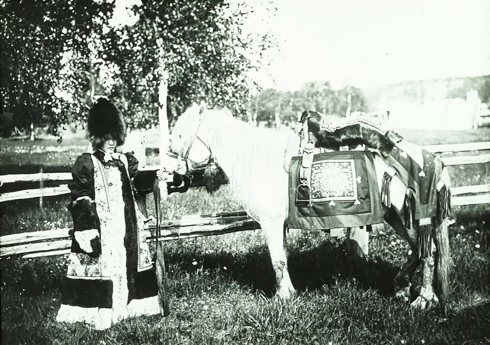
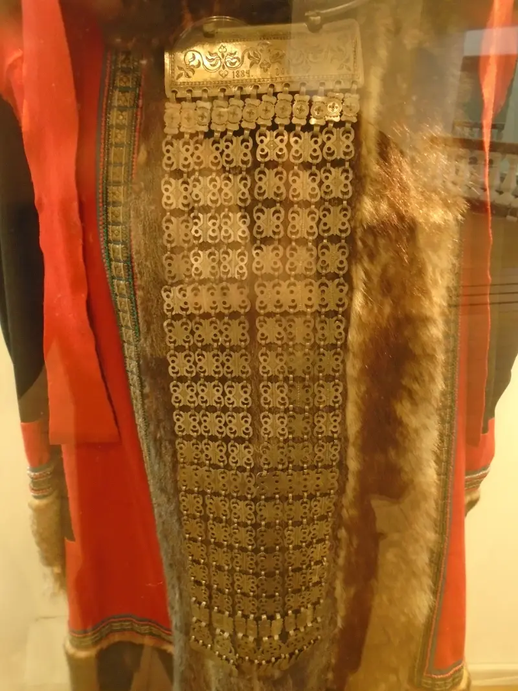
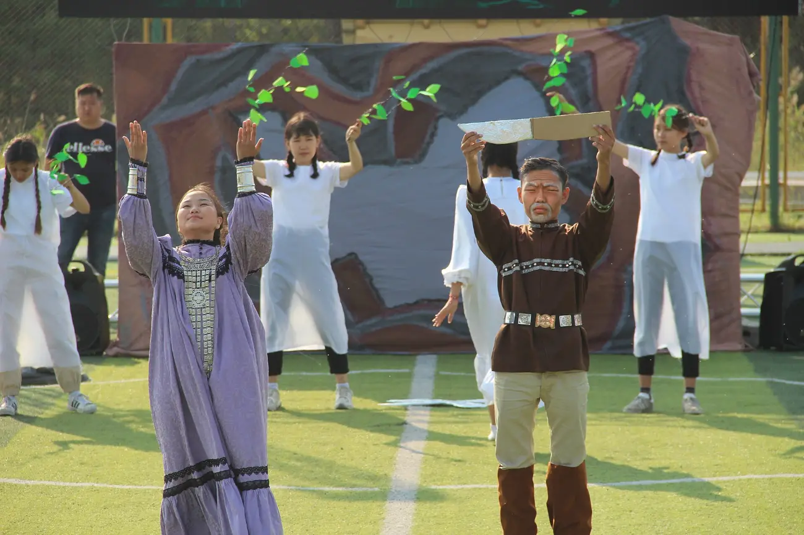
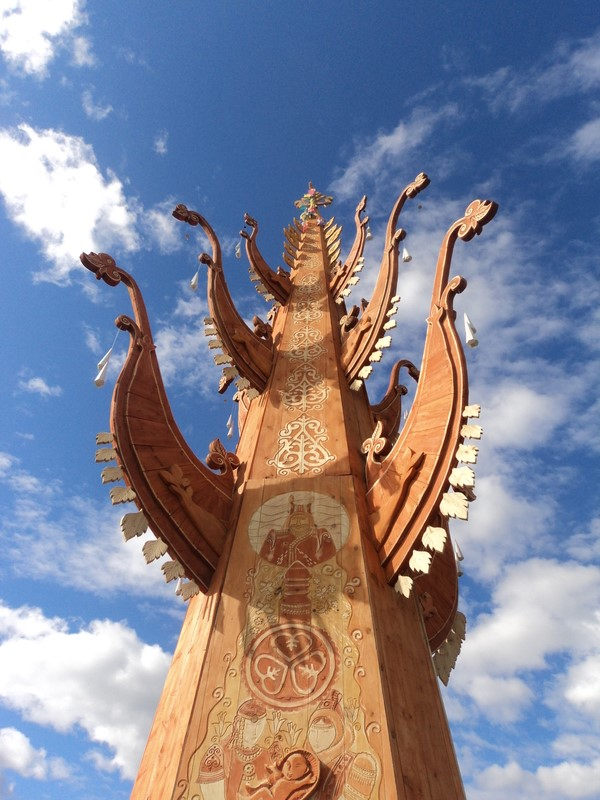
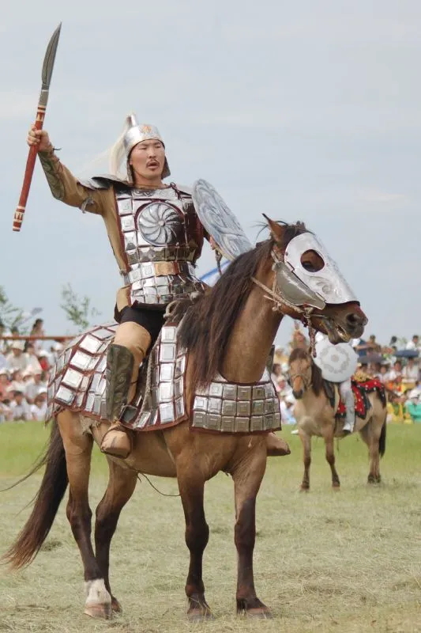
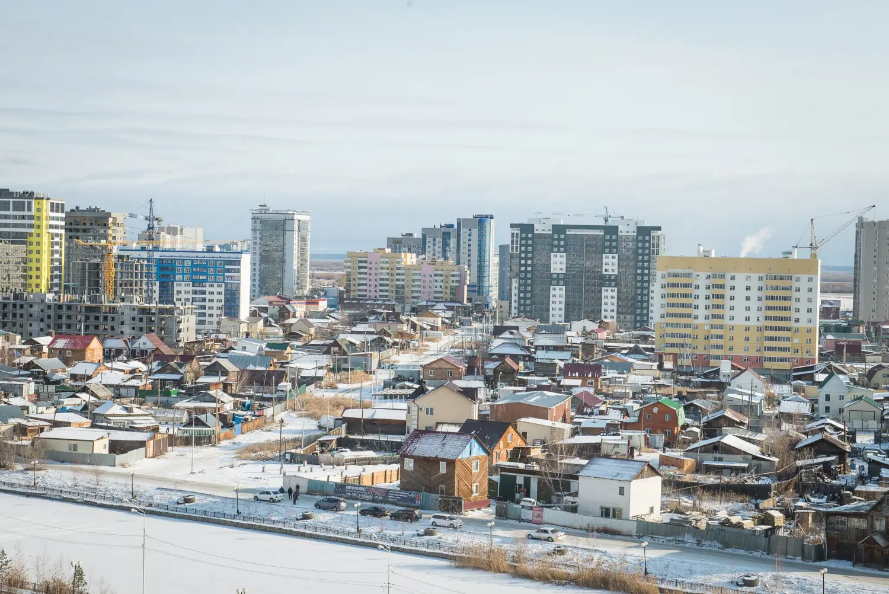

Full-stack-разработчик · Вьетнам / Россия
Павел Афанасьев
Проектирую и разрабатываю веб-сервисы, мобильные приложения и ИИ-продукты — от архитектуры до выпуска. Это портфолио собрано как цифровой экспедиционный альбом по мотивам эпоса олоҥхо.
Открыт к сотрудничеству полный цикл · удалённо
Веб-разработка · приложения · ИИ
Обо мне
Павел Афанасьев — разработчик полного цикла. Создаю веб-сервисы, мобильные приложения и ИИ-системы под ключ: от идеи до работающего продукта.
Работаю с частными предпринимателями и командами: проектирую архитектуру, пишу код, настраиваю деплой. TypeScript, React, Node.js, Python. Ведёт проект целиком или подключается на нужном этапе.
География — Вьетнам и Россия. Формат — удалённо, с чёткими сроками и прозрачным процессом. Язык коммуникации — русский, английский, вьетнамский.



Вселенная олоҥхо
Аал Луук Мас и три мира
В олоҥхо вселенная держится на мировом древе. Корни уходят в Нижний мир, ствол проходит через Средний, а крона поднимается к небесам — в эпосе их считают то три, то девять; здесь их девять. Так же устроен продукт.

Аал Луук Мас · резное древо · фото kids.nlrs.ru · Нацбиблиотека РС(Я)
02 / 03Средний мир
Орто дойду
Средний мир · люди
Здесь замысел встречается с людьми: веб, мобильные приложения, живые интерфейсы и обратная связь. Средний мир — место, где код становится продуктом, а сложная система — понятной.
Схема — авторская интерпретация. В эпосе у каждого мира свои законы, а древо соединяет их все.
Четыре игры · выберите сцену и начните
Игровые миры по мотивам олоҥхо
Три аркады на Canvas и одно 3D-приключение. Пройдите 36 колец, защитите Средний мир, спасите двенадцать огней или исследуйте Алас. У каждой игры есть пауза, рестарт и управление с клавиатуры и сенсорного экрана.
- Халлаан
- —/9
- Кольца
- 00
- Искры
- 00
- Саламаат
- ●●●
- Рекорд
- 00
- Мышь или палец ведёт искру по сцене
- Стрелки и WASD работают, когда сцена в фокусе; пробел — пауза
- Четыре кольца — одно небо. Всего девять
Игра — авторская метафора к космогонии олоҥхо, а не её пересказ. Саламаат здесь — три нити, на которых держится подъём: оборвёшь все три, и искра гаснет. Рекорд хранится только в этом браузере.
02 / 03 · Орто дойду · добро против зла
Ньургун БоотурБитва за Средний мир
Веди богатыря по снежному полю, сокращай дистанцию и рази абаасы мечом. Три волны, в последней — старший дух Нижнего мира.

- Побеждено
- 00
- Кут
- ●●●●●
- Волна
- 1/3
- Рекорд
- 00
- Двигайся мышью, пальцем или клавишами WASD и стрелками
- Пробел, щелчок или золотая кнопка — удар мечом
- Победи три волны; красные вспышки предупреждают об атаке духа
Это авторская игра по мотивам эпоса, а не канонический эпизод. 3D-доспех создан по фотографии всадника саха; образ абаасы — по указанной иллюстрации.
03 / 03 · Куттар · свет против тьмы
Куттары харыстааСпаси светлых духов
Белые духи кут теряются в метели. Подойди к ним, чтобы вернуть в мир людей, а тёмных абаасы отгоняй импульсом света. Добро здесь — не число побед, а двенадцать спасённых огней.
- Спасено
- 00/12
- Свет
- ●●●●
- Время
- 75
- Рекорд
- 00
- Коснись белого духа — его огонь спасён
- Импульс света отгоняет только тёмных абаасы
- Спаси двенадцать духов за 75 секунд и не растеряй собственный свет
Кут в этой игре — художественный образ жизненного огня. Светлые и тёмные существа объёмны: их положение, размер и тень меняются с расстоянием.
04 / 04 · Алас · 3D-мир Саха
АласПрогулка по цифровому миру
Открытый 3D-мир с берёзовыми рощами, озерами и священными сергэ. Найди золотой меч, победи абаасы и спаси красавицу Кыыс из эпоса олоҥхо. Управление: WASD, мышь, клик — атака.
- WASD или стрелки — движение, мышь — камера
- Клик по мечу — подобрать; клик по абаасы с мечом — атака
- Победи трёх абаасы, чтобы спасти Кыыс Ньургун
Полноэкранная 3D-сцена на Three.js. Мир процедурный: деревья, трава, вода и небо генерируются в реальном времени.
Избранные проекты
Проекты
Продукты, прототипы и исследования · роль Павла — разработка полного цикла
Не карточки портфолио, а живые системы. Все шесть открыты на GitHub.
Полное собрание деяний — на GitHub
Смотреть кодИнструменты мастера
Навыки и инструменты
Работаю полным циклом: проектирую интерфейс и архитектуру, подключаю данные и ИИ, собираю выпуск. Ниже — основной стек для продуктовых задач.
Веб и приложения
- React · TypeScript
- PWA · UX-системы
- Flutter · Android
Сервер и данные
- Node.js · Python
- API · WebSocket
- PostgreSQL · Prisma
ИИ и взаимодействие
- ИИ-агенты · MCP
- Голос · аватары
- 3D · Canvas · WebGL
Три круга
От интерфейса до основания
Ядро, слои и практики. Наведите курсор или выберите инструмент, чтобы увидеть, как он работает в системе.
Олоҥхо · текстом и звуком
Сказание вслух
Олоҥхо не читают глазами — его ведут голосом. Здесь текст оживает строкой, как у олоҥхоһута, который держит внимание целой ночи.
В девяти небесах загорается свет,
На серебряной Лене ломается лёд,
В Среднем мире, где людям нужен ответ,
Мастер выходит — и код несёт.
Он строит мосты над разливом разлук,
Учит машины человеческой речи,
И каждое дело, замыкая круг,
Становится ветвью на Аал Луук Мас.
Голос — это синтез речи браузера, который читает авторское стихотворение. Это не олоҥхо и не его речитатив: эпос чередует пение и речь и звучит в живом исполнении олоҥхоһута.
Хомус
Нажмите и удерживайте, затем ведите вверх-вниз.
Звучит запись настоящего хомуса.
попробовать
Хомус · Michael Coghlan · CC BY-SA 2.0 · Wikimedia Commons
запись звука · DrTrumpet · CC BY-SA 4.0
Хомус — отдельная традиция саха. Олоҥхо он не сопровождает: эпос звучит голосом олоҥхоһута, но инструментальная музыка занимает своё место в культуре саха.
Текст выше — авторское сказание по мотивам олоҥхо, а не цитата из эпоса и не его академический пересказ. Олоҥхо — живая традиция; его исполняют олоҥхоһуты, а не веб-страницы.

Открыт к сотрудничеству
Обсудим ваш проект?
Продукт, стартап, команда или одна сложная задача. Расскажите, что хотите построить — я вернусь с планом, архитектурой и следующим шагом.